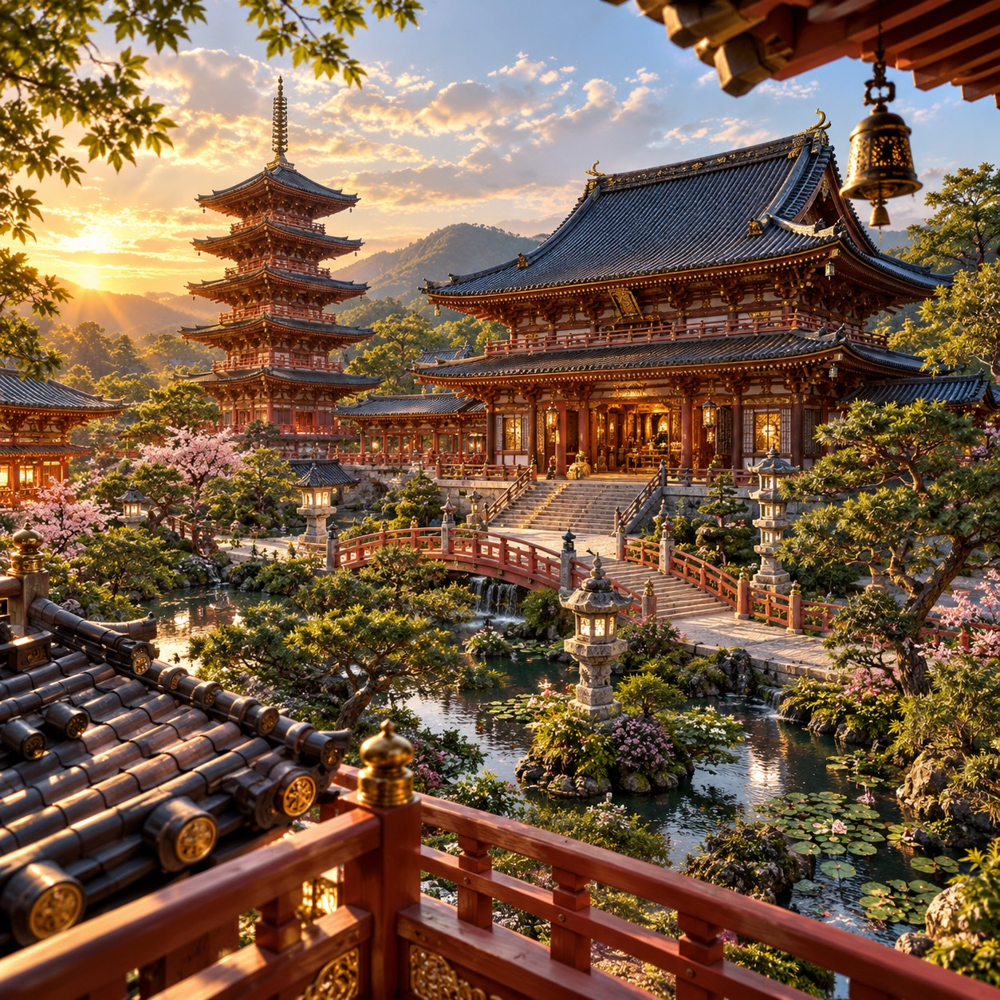
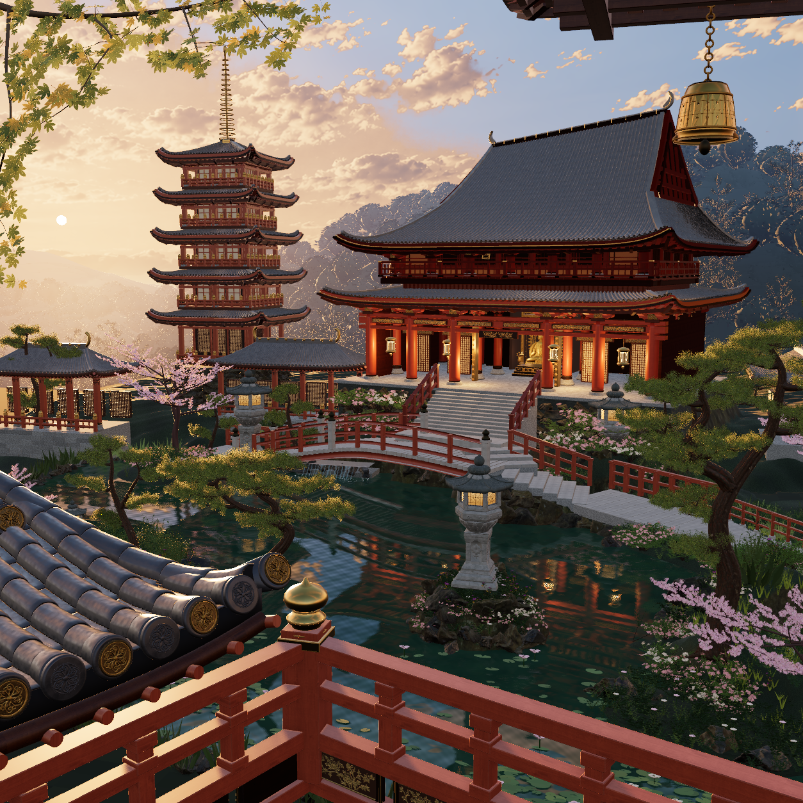
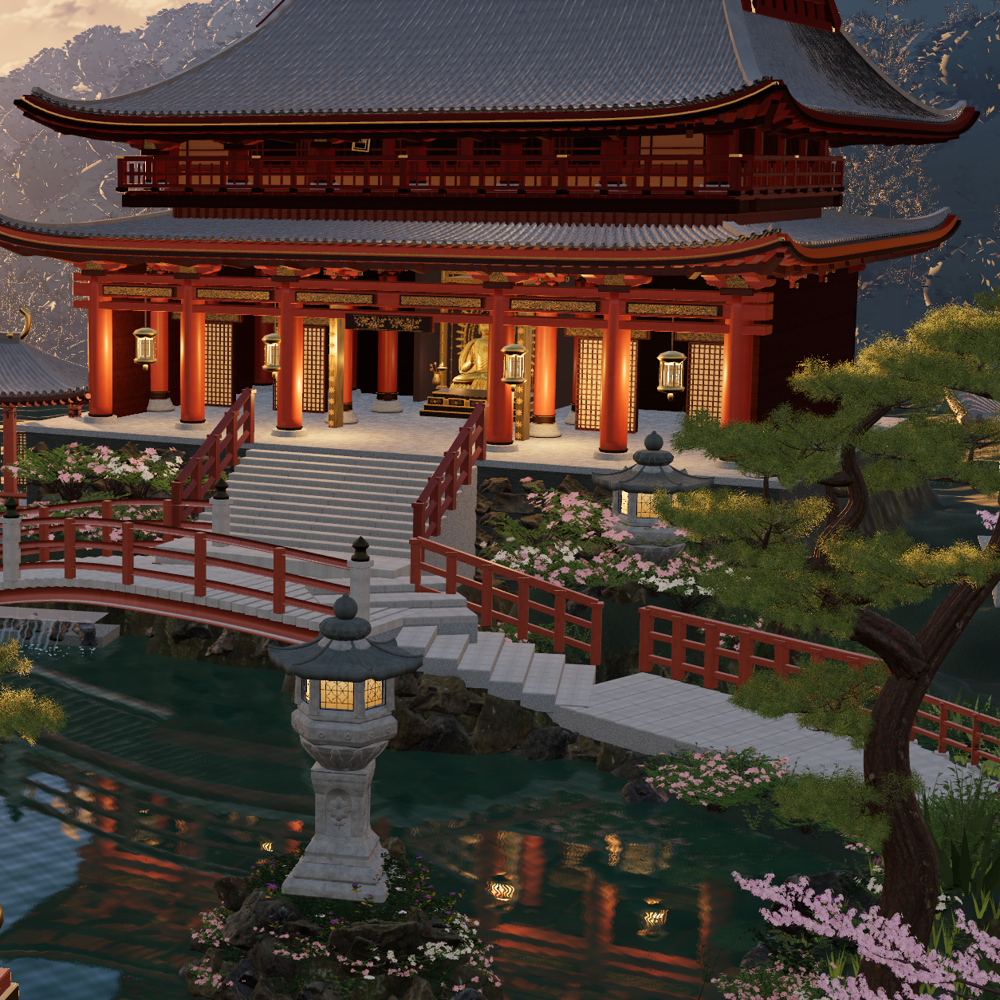
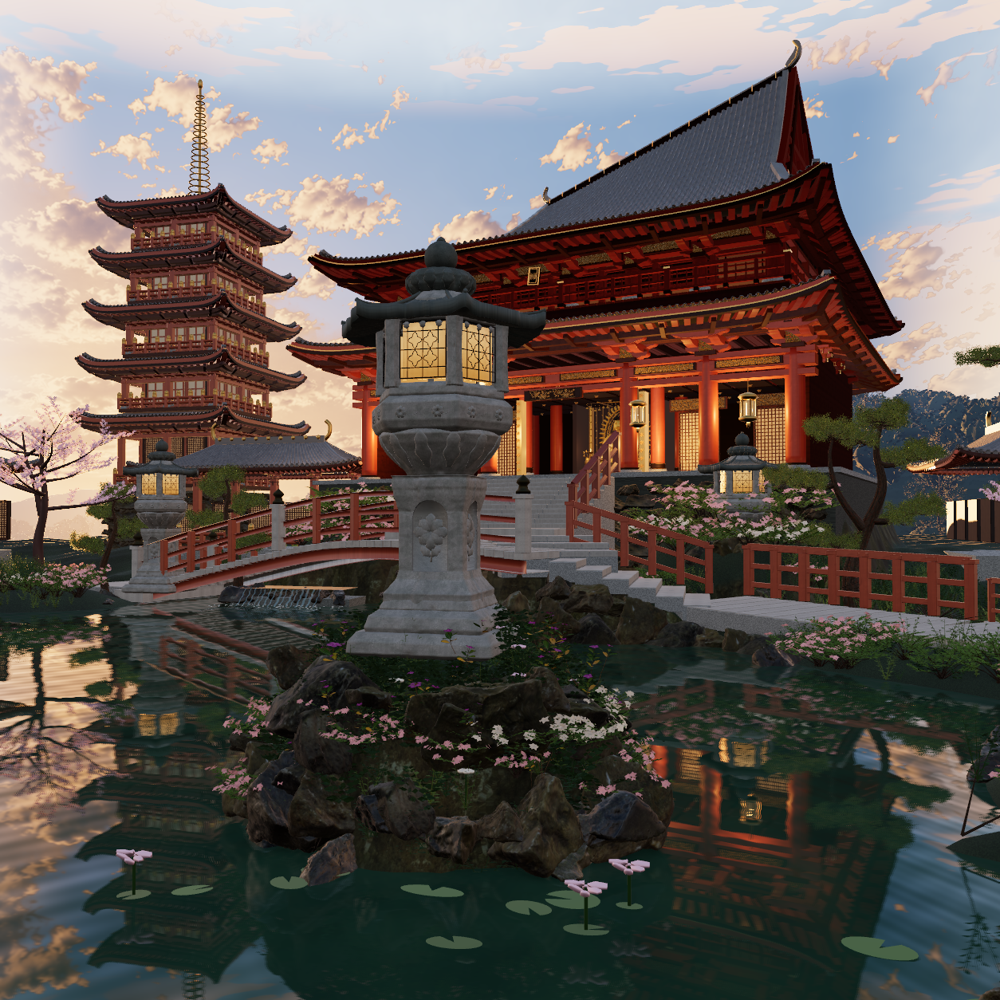

摄影相似度未验收，画面仍有明显 CG 感。本轮已实际审过 R19b、R20、R21、R22 各自的 full、真实 hero 子视锥和低岸视角。此页最新三帧均为官方 FIFO、同一份 R22 源、原生 1254 × 1254。已知穿顶已在这三视角及指定首命中射线中清除；这不等于全场碰撞证明或摄影验收。点击图像查看原 PNG。
保留 R18 的低岸、桥下连通水面、回岸路、实际土根、分枝樱树和毫米尺度松针。此次重做的是太阳/天空与材质响应、屋顶平面与实体承托：一个 0.53°太阳由五个带真实阴影的方向样本积分，同一方向、颜色与源强驱动世界天空和水面圆盘反射。相机与全部实际灯/发光材质共用 1/6 辐亮度单位；曝光 6.12 等价于旧单位 1.02，单位转换本身不是增亮。
可见太阳圆盘在全局 PMREM 生成和八个实际局部采光捕获期间关闭，直射的漫反射与镜面由同一五点太阳样本承担；水面保留真实圆盘反射，旧额外解析闪光已移除。世界坐标谷地空气按真实相机到表面的路径积分，近院保留对比，远谷获得分层；在色调映射前处理，没有全屏调色或假射线。独立 HDR 原太阳峰仍是限幅处理，太阳/天空分离和空气系数均为推断标定，不能称为恢复的绝对现场测光。
上屋顶采用实体斜脊与共享逆映射，瓦面、山墙、脊饰、檐底和承托共同修改；上层廊房收窄，真实屋面开口与封闭吊顶跟随。完整柱头和座垫占地检查替代只看外挑一排的旧算法；连续承接梁加密并在山墙高度跃变处分段，雕花与实心牌匾移回檐下。最后又修正髋部边椽的整个矩形截面，使其位于相邻屋面下缘。
陶瓦复用既有中性底色、釉面粗糙度/权重和微法线，桥栏手扶顶面有独立清漆反射；鎏金复用已声明的铸面细纹并使用真实金属材质。四个殿内探针现位于实际室内和廊下，另外四个仍区分近远低植与树冠。实际链接程序最大使用 14 / 16 个纹理单元，三帧 GL error 均为 0；这些技术数据不能代替摄影判断。
仍需重建：梁栏及墙面构件过于重复，针叶颗粒、樱冠密度与池中小花仍显程序化；参考里厚重暖金的材质反射与暗部层次更丰富。当前斜脊、隐蔽布局与空气属于真实 3D 推断形体，原生局部捕获仅近似首次反弹，未声称完整多次反弹 GI。此次交接用于新的 3D 运镜工作预览。
R22 source: 0b1009b11684d16eeb731adcfef3e94323037440db5ca80e206c56c8a18d104e
保留 R18: 9cff75d82122d3cac20d45f09e60b0633baca1dcfc8cdaa9ab2e3fb387f2e563
保留 R21 细缝失败边界: 16018796da17346b1125c2be8919626de6b07d316f226b60ef375f32bd0e618a
独立 R06 发布边界: 70005eada267162e740045177501d23745d84d9dfcaa19ee22f21d1d508e9994
| 实际关系 | 之前 | R22 |
|---|---|---|
| 太阳源强 / 角直径（相对单位） | 14 / 单方向 | 24 / 0.53°，五点同源阴影 |
| 上屋顶檐高 / 起拱，模型米 | 10.60 / 7.30 | 10.10 / 6.40，斜脊 0.625，脊段比例 0.38 |
| 上层真实廊房 X 比例 / 偏移 | 1.00 / 0.00 | 0.90 / 0.30；圆柱保持真实圆截面 |
| 柱头最大旧穿透，模型米 | 0.5364，只检查外挑一排 | 整个帽梁与座垫占地检查；旧点首命中陶瓦 |
| 右髋部边椽旧露出，模型米 | 0.0980 / 0.0669 | 整截面就位；两旧点均先命中陶瓦 |
| 房内 / 廊下捕获 | 两个旧点实际在外院 | 下房、下廊、上房、上廊均按真实房间重置 |
| 池岸、根植与樱树几何 | R18 已降低并接入真土 | 保留；未为捕获减模 |




没有新增位图、下载资产、场景替代图、照片投影、Blend 或全场导出。R19 着色器失败候选未算视觉轮次；R19b、R20、R21、R22 的真实帧与各自源均保留。R18–R22 源快照共 35 / 36 / 36 / 37 / 37 / 37 个 JS，均逐文件 SHA256 核验。
受控工作预览复制边界 · 完整交接 · 最新同源原生验证 · 实体边椽与精确命中数据 · 保留源校验 · 最新审图结论 · 全部迭代记录 · R18 保留审图页 · R06 独立发布边界